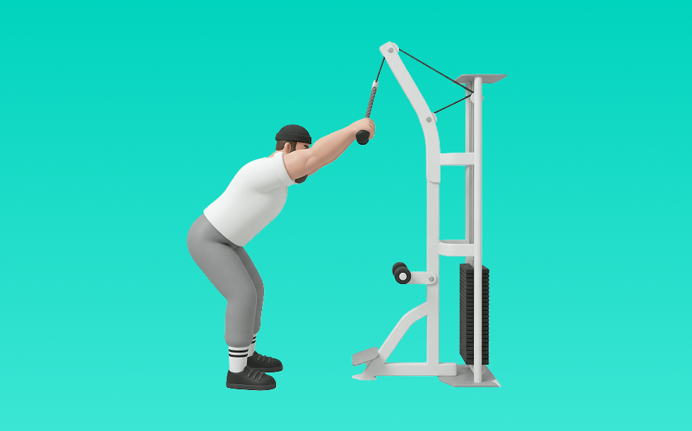

ケーブルプルオーバー

ケーブルプルオーバーとは、ケーブルを使って「引く」動作で背中（広背筋、僧帽筋、菱形筋）＋腕（上腕二頭筋）を鍛える種目です。可動域全体で張力が抜けにくいのが特徴で、反動を抑えてコントロールしながら反復します。背中の厚み・広がり作りや姿勢改善が期待できます。
- 対象部位
- 背中
- 器具
- ケーブル
- 記録形式
- 重量・回数
- 別名
- ラットプルオーバー
YouTube動画
-
【背中筋トレ(広背筋)】ケーブルプルオーバーのやり方・フォーム・コツ | 背中に縦方向の新たな刺激を入れよう！
-
【背中の必須種目】初心者でも効かせやすい！寺島遼がケーブルプルオーバーを徹底解説！
-
【初心者】ケーブルプルオーバーの効果的なやり方 | 広背筋に効果のあるケーブルマシン筋トレ【ビーレジェンド プロテイン】
-
【解説】おしらさんパーソナルで背中激変！〜持田式ケーブルプルオーバー〜
-
【ケーブルプルオーバーの全て】シャイニー薊が提案するプルオーバー、お試しください
-
【山岸秀匡】広背筋にどうぞ！ビッグヒデのケーブルプルオーバー
-
【超重要！】プルオーバー 徹底解説！
-
【筋トレ】背中や胸を発達させるのに効果的？プルオーバーの正しいやり方とメニューへの取り入れ方とは
-
【背中トレーニング】背中を鍛えられる"ケーブルプルオーバー"やり方《心斎橋の女性のためのパーソナルジム・ボディーサーベーション》
-
【背中トレ】広い背中を作る広背筋トレーニング 、ケーブルプルオーバー！中上級者向け【山岸秀匡】
-
逆三&分厚い上半身を目指せ!! ケーブルプルオーバー(プルダウンとも言います)の基本的なやり方について!!
-
【ケーブルマシン】女性が知りたいお尻・二の腕・背中 使い方4選！
-
【背中肥大】ケーブルプルオーバーのやり方を解説！
-
必須ケーブルマシン種目１３選！
YouTubeショート
-
プロが教えるケーブルプルオーバーの解説
-
背中広がらない人、ほぼこれやってます。ケーブルプルオーバーで❌肘を曲げる❌肩をすくめる❌最後まで引かないこれ全部NG。#背中トレ #広背筋 #筋トレ #ケーブルプルオーバー #ラットプルダウン
-
【ケーブルプルオーバー】背中をデカくする必須種目#背中トレーニング#筋トレ#パーソナルトレーナー #筋トレ男子
-
正しいケーブルプレスダウン4つのポイント #筋トレ
-
背中を最大限に鍛える種目3選【筋トレ】
-
背中が成長しないラットプルダウン
-
正しいラットプルダウン4つのポイント【筋トレ】
-
ケーブルプルオーバーのテクニック
-
【劇的に効かす】ケーブルプルオーバー3つのコツ
-
正しいダンベルロウ4つのポイント #筋トレ
-
【IFBB PRO 上里選手】筋トレ初心者必見!!背中種目で注意すべきこと
-
ケーブルプルオーバー腕ではなく背中に効かせるテクニック！
-
ケーブルプルオーバー：広背筋
-
ケーブルエクステションの正しい位置
-
背中が成長しないベントオーバーロウ #筋トレ
-
【ケーブルプレスダウンの正しいやり方】理想と間違い#仙台パーソナルジム#仙台ジム#tryve#TRYVE#トライヴ#筋トレ初心者#腕トレ#ボディメイク#ボディビル
-
ケーブルプルオーバー腕ではなく背中に効かせるテクニック！
-
【よくある間違いケーブルプレスダウン】 #ダイエット #筋トレ #新座市 #志木市 #ケーブルプレスダウン
-
背中トレのやり方🔥〜ダンベルワンハンドロー基礎編〜 #筋トレ #マッチョ #筋肉社長 #背中トレ
-
【背中トレ】まじコレやってないのもったいない！#背中トレ #ケーブルプルオーバー
-
腕のやり方🔥〜ケーブルプレスダウン基礎編〜 #筋トレ #筋肉 #筋肉社長 #腕トレ
-
みなさんはオーバーヘッドエクステンションどのようにされてますか？？今回は持田選手がオーバーヘッドエクステンションを伝授！次はどの種目の解説をやってほしいかコメントしてね！#ちょこっと惜しい
-
ケーブルで重い重量扱う時のコツ
-
【胸トレ解説】ケーブルクロスオーバー(上部) #筋トレ解説 #胸トレ #胸筋トレ
-
【よくある間違いフェイスプル】 #パーソナルジム #大泉学園 #志木市 #新座市 #朝霞市 #東久留米 #筋トレ #Home Fit 新座 #フェイスプル
-
【腹筋トレ解説】ケーブルクランチ #筋トレ解説 #腹筋トレ #腹筋トレーニング
-
ケーブルプルオーバー背中に効かせる意識とやり方
-
トレーナーが1分解説「ケーブルプルオーバー」の正しいやり方とコツ【背中/マシン】
-
【忙しい人向け】1日30分で鬼の背中を作るトレーニング#shorts #youtubeshorts ##筋トレ大学#ダイエット#筋トレ
-
背中が鬼になる3種目をガチで教えます。#shorts
-
横川君から学ぶ背中トレ
動作方法
- 体幹を安定させ、背中が丸まらない姿勢を作る
- 肘を後方へ引き、肩甲骨を寄せる
- 勢いを使わず、ゆっくり戻す
動作ポイント
- 背中を丸めない
- 首に力を入れすぎない
- 戻しを速くしすぎない
ワンポイントアドバイス
- 腕ではなく背中で引く感覚を優先する
- 反動が増えたら重量を一段下げる
目的別回数設定
目的や体力に応じた一般的な目安です。無理のない範囲で調整してください。
- 筋力アップ
- 1〜5回
- 筋肥大
- 6〜12回
- 持久力アップ
- 13〜20回
YouTube動画について
動画はYouTubeの公開情報をもとに表示しています。内容は投稿者によるもので、Biggrによる監修ではありません。
アプリを入手
筋トレやトレーニングの記録はBiggrにお任せください。今すぐ無料で使い始められます。